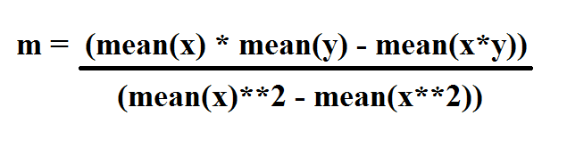
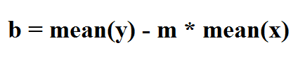
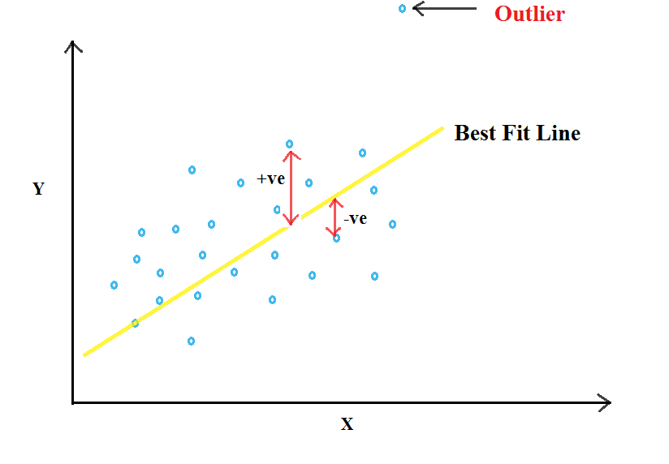
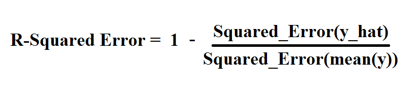
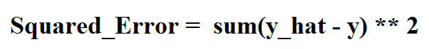

Hello Everyone !!
Thanks for continuing with this post.
In the last post, we discussed about the basics of Machine Learning i.e. the types of Machine Learning Algorithms. We briefly went over the Supervised and Unsupervised Learning. We also went over Classification and Regression and the difference between them.
In this post, we will study about the theory and mathematics behind Linear Regression and then further go ahead and write the code from scratch using an example dataset.
Linear Regression:
So, what is Linear Regression!! Let's start from a definition. Wikipedia defines Linear Regression as follows:
In statistics, linear regression is an approach for modeling the relationship between a scalar dependent variable y and one or more explanatory variables (or independent variables) denoted X. The case of one explanatory variable is called simple linear regression. For more than one explanatory variable, the process is called multiple linear regression.
Linear Regression is the oldest, simplest and the most widely used predictive model in the field of machine learning.
So, what is the aim of Linear Regression ?? Well, its aim is to fit a straight line for the given data points by minimizing the sum of squared errors. This line is called as the "Best Fit Line".

You would think what is the benefit of getting a Best Fit Line ?? Well, if we can fit a straight line through the data, then for new input value of say, x, we can predict the new value of y i.e. given the square footage of a new house, we can estimate the price of the house.
Have we seen any example of this algorithm in the previous posts ?? Well if you remember the example of Regression for predicting price of house using square footage as input, the image shows a straight line for a scatterplot of data points.

This line that best fits/represents the data is called a Best Fit Line.
In this post, we will firstly discuss Linear Regression for Single/One Variable and later on move on to Linear Regression using Multiple Variables.
Linear Regression with One Variable:
If we see the Wikipedia definition for Linear Regression shown above, we can see that the aim of Linear Regression is to model a relationship between a dependent variable y and one or more explanatory variables x.
So, lets go back to school. We know that a straight line with one variable can be represented by the equation:
y = mx + b
Linear Regression with One Variable uses this same equation to get a best fit line for the given data points. We can get the values of x and y from input data as we are given the data points and hence, plot a straight line.
Linear Regression with Multiple Varibles:
Before moving to calculation of error, mean and bias, let's also have a look at Linear Regression with Multiple Variables and see that how it is different from Linear Regression with One Variable as the calculations for both of them will not change much.
As the name tells, the equation for a stright line has multiple variables. The equation for one variable can be written for multiple variables as:
y = m1x1 + m2x2 + m3x3 + b
where m1, m2, m3 are the coefficients, x1, x2, x3 are the variables and b is the bias. The aim in this remains the same i.e. to get a "Best Fit Line" using the data points.
Estimating Slope and Bias:
We talked about the equations for one and multiple variables. But wait a minute !! We still don't know the values of m and b !! So how to find these values ?? Well this part is the heart of this algorithm. But before that, what is m and b ?? m is called the slope of the line and b represents the bias.
So, back to the main topic. How to find the values of m and b. Well, these values are estimated from the input data points during the process called Training. As we discussed above that m is the slope for the Best Fit Line and b is the bias. So, what is the equation for m and b for the Best Fit Line given the input data variables x and y ??
The equation for slope of a Best Fit Line is given as:

i.e. Mean of x multiplied with mean of y minus mean of product of x and y. This is divided by square of mean of x minus the mean of x squared.
Now that we have got the value of m, we want the value of b. The bias, b is given by the equation:

i.e. Mean of y minus slope (m) multiplied by the mean of x.
Now you would say that we have got the values of m and b, now we can easily plot the values using these values of m and b and get the Best Fit Line. Not that easy !! Is this line really a "Best Fit Line" ?? How do we know that this line perfectly fits the given data points ??
To find out that how good of a fit is this line that we just got, there should be some sort of a metric that gives us the cost or the error for the "Best Fit Line". In this tutorial, we'll be using Squared Error to find out that by how much does our line miss the Best Fit Line or the accuracy of the line.
Error Calculation: R-Squared Error
In this, we calculate the error by finding the distance between the data points and the initial line that we plot using the values of m and b obtained.
Now you would ask, why square of error. Can it not be used as it is ?? As we said above, the error is the distance of points from the line and the points can be both above and below the line i.e the distance can be both +ve as well as -ve. Hence, using square of the error helps us to make the -ve values +ve and secondly, it helps to penalize the equation for outliers i.e. the values which are very far from the line.

Now why would we do that ?? Well, we want to fit a straight line and hence, we would like to have linear data. Having an outlier does not helps in fitting a line and hence should be neglected.
So, now to the mathematics. The R-Squared Error is given by the equation:

where Squared_Error is given as:

and y_hat are the predicted values using m and b that we just derived above.
On calculating the R-Squared Error, the more the value is near to "1", the more accurate the line is. But why ?? Because we are subtracting the error from 1 and hence the value obtained will be the accuracy of the line (y_hat) that we just plot.
Now we have found the accuracy of the line. But this method is still hard coded as there is no way we can make any changes to improve the accuracy of the line.
Hence, now I would like to introduce the concept of Gradient Descent.
Now that we have covered some of the basics of Linear Regression, I think its now time to optimize this algorithm using Gradient Descent.
Great work on completing this tutorial, let's move to the next tutorial in series, Introduction to Machine Learning: Gradient Descent for Linear Regression
For more projects and code, follow me on Github
Please feel free to leave any comments, suggestions, corrections if any, below.
comments powered by Disqus